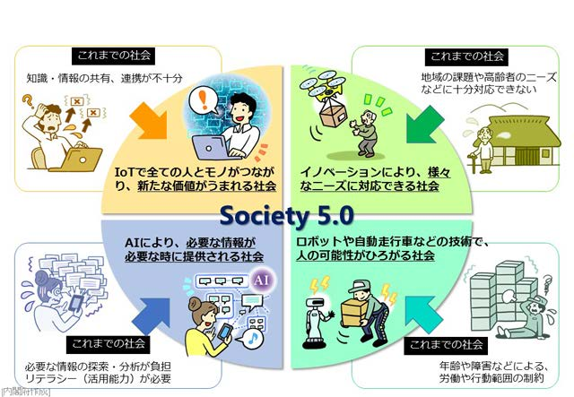
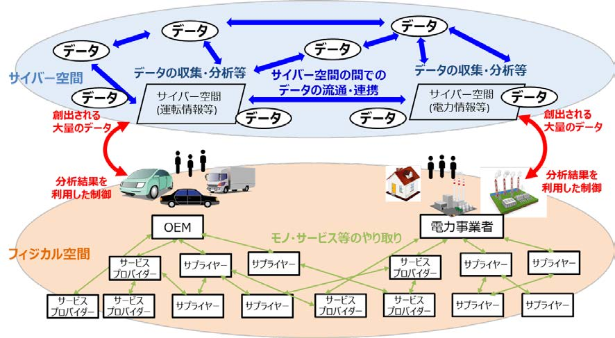
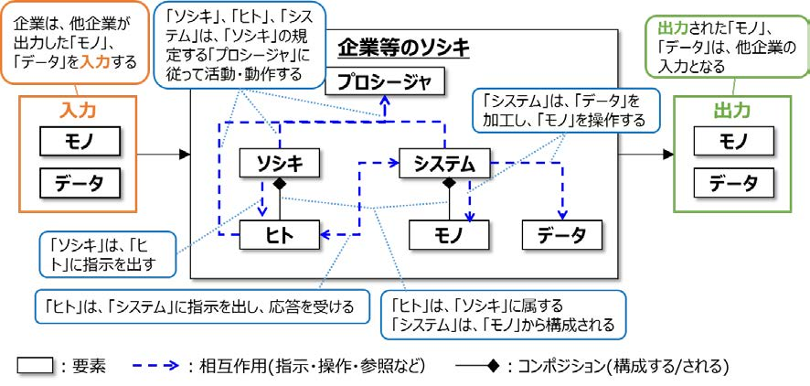
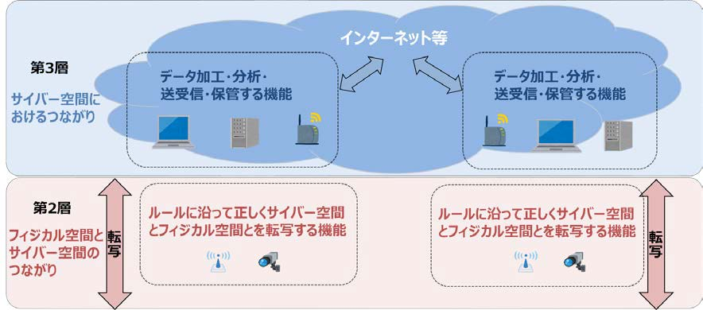
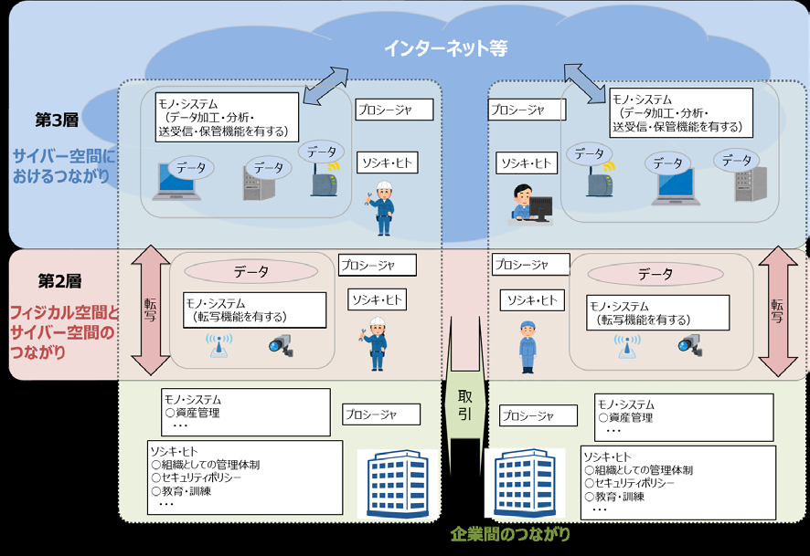
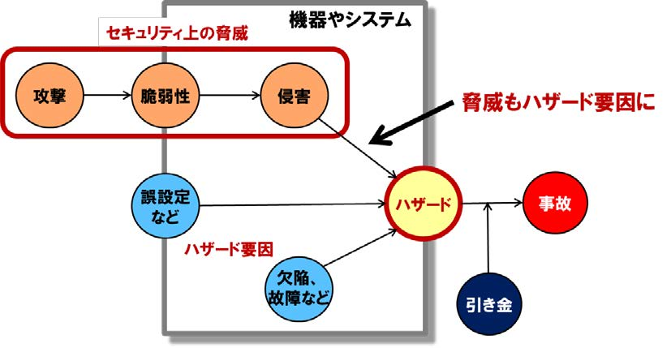
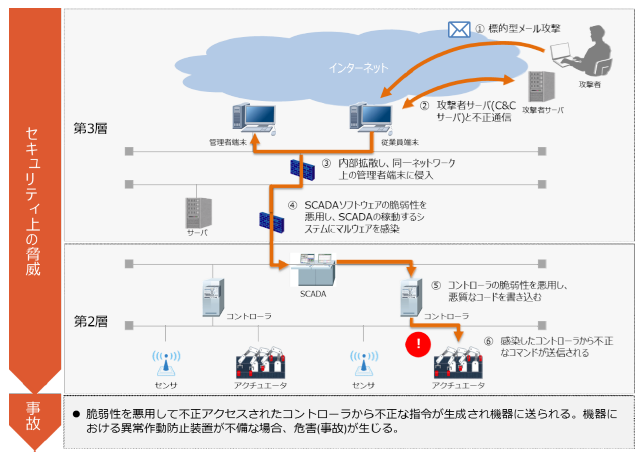
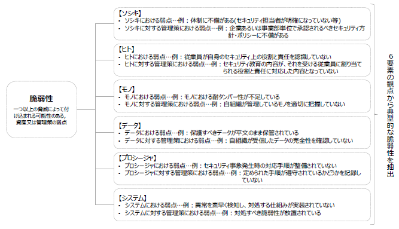
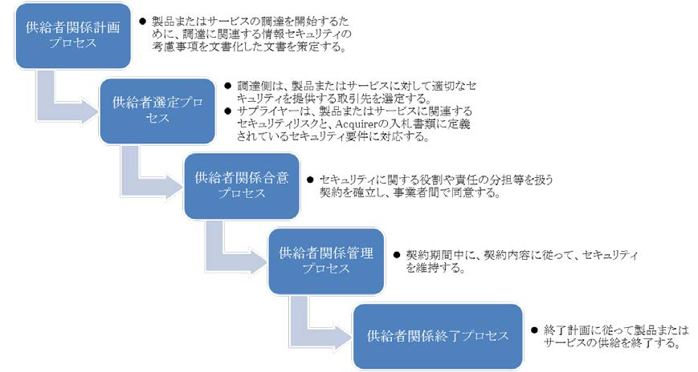

- Sec01-03-07【刊行物】サイバー・フィジカル・セキュリティ対策フレームワーク
- 改版履歴
- 2019年5月28日 正式版対応
- タイトル
- Society5.0 における新たなサプライチェーン（バリュークリエイションプロセス）の信頼性の確保に向けて
- エグゼクティブサマリー
- １
- 我が国では、サイバー空間とフィジカル空間を高度に融合させることにより、多様なニーズにきめ細かに対応したモノやサービスを提供し、経済的発展と社会的課題の解決を両立する超スマート社会「Society5.0」の実現を提唱している。
- さらに、「Society5.0」の実現へ向けて様々なデータの「つながり」から新たな付加価値を創出していく「Connected Industries」という概念を提唱し、その実現に向けた取組を推進している。
- ２
- 「Society5.0」における産業社会では、データなど様々なつながりが生まれる「Connected Industries」という形で企業間・産業間のネットワーク化が進展して、従来とは異なる、これまで取引を行うことがなかった主体を新たに巻き込んだ、より柔軟で動的なサプライチェーンを構成することが可能となり、サイバー空間とフィジカル空間が相互に作用しあう中で、両空間を跨いで構成される新たな形のサプライチェーンが新たな付加価値を生み出していくことになる。
- ３
- 一方で、ネットワーク化によってサイバー空間とフィジカル空間の両空間を跨いで動的に構成される新たな形のサプライチェーンの拡大は、ネットワーク化されたサプライチェーン上に攻撃起点が広く拡散していくことになり、攻撃側が攻撃起点を得る機会が増え、防御側が守るべき範囲が急激に拡大することを意味する。
- ４
- また、サイバー空間とフィジカル空間が相互に作用しあうことは、サイバー攻撃がフィジカル空間に及ぼす影響も増大していくことを意味し、サイバー攻撃による被害は甚大なものになっていく可能性がある。
- ５
- このように、サイバー空間とフィジカル空間が融合することで新たな価値を生み出していく「Society5.0」における産業社会では、一方で、サイバー攻撃の起点が拡大するとともに、サイバー攻撃による被害がフィジカル空間に及ぼす影響も増大し、これまでとは異なる新たなリスクを伴うことになる。
- 本フレームワークは、新たな産業社会におけるこうした環境において、付加価値を創造する活動が直面する新たなリスクに対応していくための指針を示すものである。
- ６
- 高度にネットワーク化され、動的に構成されるサプライチェーンに様々な主体が参加するような状況においては、一企業が取り組むセキュリティ対策だけでサイバーセキュリティを確保していくことには限界がある。
- このため、それぞれの企業がセキュリティ・バイ・デザイン等の観点を踏まえて、企画・設計段階から製品やサービスのサイバーセキュリティ対策を実施することに加え、ビジネス活動のレジリエンスまで考慮に入れた上で、関連企業、取引先等を含めたサプライチェーン全体としてセキュリティ対策に取り組むマルチステークホルダーによるアプローチや、データ流通におけるセキュリティも含めて、サイバーセキュリティ確保に取り組む必要がある。
- ７
- 本フレームワークでは、「Society5.0」における新たな形のサプライチェーンにおいて全産業にほぼ共通して求められるセキュリティ対策をわかりやすく示すために、サイバー空間とフィジカル空間が高度に融合した産業社会を3 つの切り口（「企業間のつながり」、「フィジカル空間とサイバー空間のつながり」、「サイバー空間におけるつながり」）から捉え、サプライチェーンの信頼性（trustworthiness）を確保する観点から、それぞれの切り口において守るべきもの、直面するリスク源、対応の方針等を整理している。
- ８
- 一方、それぞれの産業分野においては、産業構造や商慣行などの観点から、業界や企業により、守るべきもの、許容できるリスク等が異なっている実態があり、セキュリティ対策は、こうした各産業分野の持つ特徴も踏まえる必要があることから、各業界や各企業において、本フレームワークに記載の内容を参考に実態に則したセキュリティ対策の項目を列挙したプロファイルの作成に活用していただきたい。
- ９
- 最後に、AI 技術の更なる進展等によりサイバー空間とフィジカル空間の一体化が進むことで、新たな脅威の出現が考えられる。本フレームワークも新たな脅威に対応するために適切に見直しを図っていく。
- はじめに
- １．「Society5.0」、「Connected Industries」が実現する社会
- ネットワーク化やIoT（Internet of Things）の利活用が進む中、世界では、ドイツの「インダストリー4.0」等、ものづくり分野でIT を最大限に活用し、第4 次産業革命とも言うべき変化を先導していく取組が、官民協力の下で打ち出され始めている。
- 我が国においても、平成28 年1 月22 日に閣議決定された「第5 期科学技術基本計画」において、サイバー空間とフィジカル空間を高度に融合させることにより、多様なニーズにきめ細かに対応したモノやサービスを提供し、経済的発展と社会的課題の解決を両立する超スマート社会「Society5.0」を提唱している。
- さらに、「Society5.0」へ向けて、様々なつながりによって新たな付加価値を創出する「Connected Industries」の実現に向けた新たな産業構造の構築が求められている。
- 図i-1 「Society 5.0」で実現する社会のイメージ1
- 
- 1 内閣府「Society 5.0「科学技術イノベーションが拓く新たな社会」説明資料」
- 「Society 5.0」は、狩猟社会（Society 1.0）、農耕社会（Society 2.0）、工業社会（Society 3.0）、情報社会（Society 4.0）に続く、新たな社会を指すものである。
- これまでの情報社会（Society 4.0）では、必要な知識や情報が共有されず、新たな価値の創出が困難であったり、また、膨大な情報の中から必要な情報を見つけ、分析する作業に困難や負担が生じるなどの問題があった。
- 「Society 5.0」で実現する社会は、IoT で全ての人とモノがつながり、様々な知識や情報が共有され、新たな価値が生まれる社会である。
- また、人工知能（AI）により、多くの情報を分析するなどの面倒な作業から解放される社会である。
- さらに、「Society5.0」では、これまでの経済や組織のシステムが優先される社会ではなく、AI やロボットなどがこれまで人間が行っていた作業を支援し、必要なモノやサービスを、必要な人に、必要な時に、必要なだけ提供する人間中心の社会となる。
- 図i-2 「Society5.0」社会におけるモノ・データ等のつながりのイメージ
- 
- ■サプライチェーンの構造変化
- こうした「Society 5.0」においては、企業を中心に付加価値を創造するための一連の活動であるサプライチェーンも、その姿を変えることになる。
- これまでのサプライチェーンは、始めに厳密な企画・設計を行い、それを踏まえて必要な部品やサービスを調達し、組み立て・加工を行い、最終的な製品・サービスを提供するという、一連の活動の順番が固定的・安定的な形で展開される、定型的・直線的な構成をとっていた。
- しかし、「Society5.0」では、サイバー空間とフィジカル空間が高度に融合する中で、必要な人に対して、必要な時に、必要なモノやサービスが提供されることになる。
- 付加価値を創造するための一連の活動の起点は、これまでのように供給者が企画・設計するという固定的なものではなく、需要者が付加価値の創造活動の起点となっていくことも増大していく。
- また、付加価値を創造するための一連の活動の開始時点で設定された“必要性”の内容が変化したことに対応して活動内容が途中で変更されたり、より有用なデータが得られれば、その要素を取り入れて新たな活動を組み込んでいく。
- このように、サプライチェーンはサイバー空間とフィジカル空間の両空間を跨いで、様々なモノやデータが動的につながって構成される付加価値の創造活動へと変化していくことになる。
- このように変化したサプライチェーンは、従来の定型的・直線的なサプライチェーンと対比し、「Society5.0」型のサプライチェーンとして捉え、既存のシステムやプロシージャなどについても、改めて捉え直すことが必要となる。
- 本フレームワークでは、このような「Society5.0」型のサプライチェーンをこれまでの定型的・直線的なサプライチェーンとは区別して認識するため、『価値創造過程（バリュークリエイションプロセス）』と定義することとする。
- ２．サイバー攻撃の脅威の増大
- ３．フレームワークを策定する目的と適用範囲
- ４．フレームワークの想定読者
- ５．フレームワークの全体構成
- ６．フレームワークに期待される効果と特徴
- ７．フレームワークの使い方
- 第Ⅰ部 コンセプト：サイバー空間とフィジカル空間が高度に融合した産業社会における産業分野のサイバーセキュリティの在り方
- １．サイバー空間とフィジカル空間が高度に融合した産業社会における「Society5.0」型サプライチェーン“価値創造過程（バリュークリエイションプロセス）”への対応
- ２．価値創造過程（バリュークリエイションプロセス）のセキュリティを確保するための信頼性（trustworthiness）の基点を設定するためのモデル －三層構造と６つの構成要素－
- 図1.2-1 バリュークリエイションプロセスが展開する産業社会の三層構造
- サイバー空間におけるつながり【第3 層】
- フィジカル空間とサイバー空間のつながり【第2 層】
- 企業間のつながり【第１層】
- ２．１．三層構造アプローチの意義
- 図1.2-2 三層構造アプローチと各層における信頼性
- ２．２．６つの構成要素
- 図1.2-3 ６つの構成要素の関係
- 
- 図1.2-4 三層構造における６つの構成要素の関係
- ３．価値創造過程（バリュークリエイションプロセス）におけるリスク源とそれに対応する方針の整理
- 図1.3-1 各層におけるセキュリティ対策の概要
- ４．フレームワークを活用した信頼性の確保の考え方
- 図1.4-1 信頼性の基点と信頼性の確保の考え方
- 図1.4-2 信頼の創出、信頼の証明、信頼のチェーンの構築と維持の関係のイメージ
- ５．結び
- 第Ⅱ部 ポリシー：リスク源の洗い出しと対策要件の特定
- １．三層構造モデルと６つの構成要素を活用したリスクマネジメントの進め方
- 図2.1-2 リスクマネジメントの流れ5

- 5 IPA「制御システムのセキュリティリスク分析ガイド 第2 版」を参考にしつつ、本フレームワークのコンセプトを活かすように修正
- １．１．分析対象の明確化(三層構造モデルへの落とし込み)
- 図2.1-4 第１層の分析範囲及び資産に関する抽象モデル
- 図2.1-5 第２層及び第３層の分析範囲及び資産に関する抽象モデル
- 
- 図2.1-6 分析範囲及び資産に関する抽象モデル
- 
- 図2.1-7 セキュリティ上の問題がセーフティに影響を与えるモデル7
- 
- 図2.1-8 セキュリティ上の問題がセーフティに影響を与える事例
- 
- １．２．想定されるセキュリティインシデント及び事業被害レベルの設定
- １．３．リスク分析の実施
- 図2.1-9 6つの構成要素という観点による脆弱性の抽出
- 
- １．４．リスク対応の実施
- 図2.1-10 ISO/IEC 27036-2:2013 における個々のサプライヤーとの契約におけるライフサイクル
- 
- ２．リスク源と対策要件の対応関係
- 第Ⅲ部 メソッド：セキュリティ対策要件と対策例集
- １．対策要件及び対策例集を活用したリスク対応
- ２．対策例集の見方
- ３．対策要件
- ３．１．CPS.AM – 資産管理
- ３．２．CPS.BE – ビジネス環境
- ３．３．CPS.GV – ガバナンス
- ３．４．CPS.RA – リスク評価
- ３．５．CPS.RM – リスク管理戦略
- ３．６．CPS.SC – サプライチェーンリスク管理
- ３．７．CPS.AC – アイデンティティ管理、認証及びアクセス制御
- ３．８．CPS.AT – 意識向上及びトレーニング
- ３．９．CPS.DS – データセキュリティ
- ３．１０．CPS.IP – 情報を保護するためのプロセス及び手順
- ３．１１．CPS.MA – 保守
- ３．１２．CPS.PT – 保護技術
- ３．１３．CPS.AE – 異変とイベント
- ３．１４．CPS.CM – セキュリティの継続的なモニタリング
- ３．１５．CPS.DP – 検知プロセス
- ３．１６．CPS.RP – 対応計画
- ３．１７．CPS.CO – 伝達
- ３．１８．CPS.AN – 分析
- ３．１９．CPS.MI – 低減
- ３．２０．CPS.IM – 改善
- 添付
- 添付A ユースケース
- 添付B リスク源と対策要件の対応関係
- 添付C 対策要件に応じたセキュリティ対策例
- 添付D 海外の主要規格との対応関係
- 添付E 用語集
- 以下、今後加筆予定